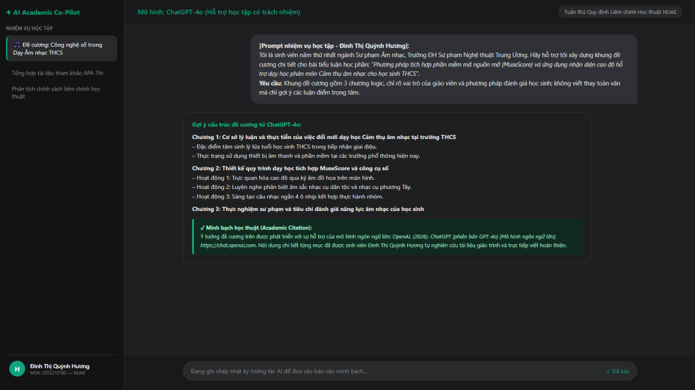
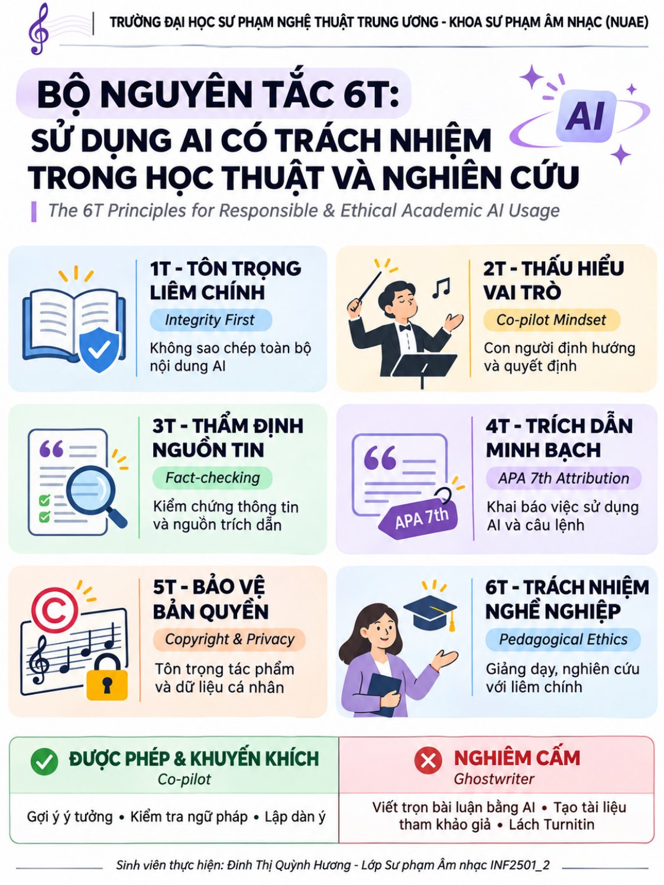

aMục tiêu bài tập
Yêu cầu
Tìm hiểu chính sách và các vấn đề đạo đức khi dùng AI trong học tập, nghiên cứu; thực hiện một nhiệm vụ học tập cụ thể có AI hỗ trợ một cách minh bạch; từ đó xây dựng bộ nguyên tắc cá nhân về sử dụng AI có trách nhiệm.
Nhiệm vụ thực hành mình chọn
Soạn khung đề cương chi tiết cho tiểu luận: “Phương pháp tích hợp phần mềm mã nguồn mở (MuseScore) và ứng dụng nhận diện cao độ hỗ trợ dạy học phân môn Cảm thụ âm nhạc cho học sinh THCS”.
Kỹ năng được rèn luyện
- Phân biệt hỗ trợ hợp lý và gian lận học thuật khi dùng AI
- Kiểm chứng và chỉnh sửa đầu ra của AI bằng kiến thức chuyên môn
- Trích dẫn và kê khai việc dùng AI (APA 7)
- Bảo vệ dữ liệu cá nhân, tôn trọng bản quyền
bTóm tắt quá trình thực hiện
Các bước thực hiện
- Tìm hiểu ranh giới sử dụng AI: đối chiếu cách tiếp cận của Trường ĐH Sư phạm Nghệ thuật Trung ương, ĐHQG Hà Nội và ĐH Bách khoa Hà Nội; rút ra ba điểm chung: dùng AI để hỗ trợ, tự chịu trách nhiệm về nội dung, công khai phạm vi đã dùng.
- Yêu cầu ChatGPT-4o gợi ý cấu trúc đề cương 3 chương, chỉ rõ vai trò giáo viên và cách đánh giá học sinh, không viết thay toàn văn.

Hình 1. Câu lệnh và phần gợi ý đề cương của ChatGPT-4o - Thẩm định tính thực tế: thay các ví dụ chung chung kiểu phương Tây bằng bài hát, chất liệu trong Chương trình GDPT 2018 (sách Âm nhạc 6, 7).
- Sửa thuật ngữ: đổi từ dịch thô “phần mềm phân tích nốt” thành “phần mềm ký âm và mô phỏng trực quan cao độ âm thanh”.
- Tự thiết kế phần đánh giá: phiếu đánh giá cảm thụ âm nhạc của học sinh và cách tổ chức hoạt động nhóm, nâng phần đóng góp cá nhân lên trên 75%.
- Kê khai AI theo APA 7, xây dựng Bộ nguyên tắc 6T và thiết kế infographic.

Công cụ đã sử dụng
| Công cụ | Dùng để làm gì | Vì sao chọn |
|---|---|---|
| ChatGPT-4o | Gợi ý dàn ý 3 chương cho đề cương | Phù hợp để thử nghiệm quy trình dùng AI có kiểm soát |
| Google Gemini | Gợi ý từ khóa tìm tài liệu | Hỗ trợ mở rộng hướng tìm kiếm |
| Google Docs | Viết báo cáo, xuất PDF | Dễ chỉnh sửa, lưu trên đám mây |
Ghi nhận sử dụng AI
| Công việc | Công cụ AI | AI hỗ trợ | Mình tự thực hiện |
|---|---|---|---|
| Lập đề cương tiểu luận | ChatGPT-4o | 30% · gợi ý dàn ý 3 chương | 70% · hiệu đính, bổ sung giáo trình và bối cảnh THCS |
| Tổng hợp tài liệu tham khảo | Google Gemini | 20% · gợi ý từ khóa | 80% · tra cứu, đọc và đối chiếu nguồn gốc |
| Viết toàn văn nội dung | Không dùng | 0% | 100% · tự viết từ kiến thức học phần |
Các tỷ lệ trên là tự đánh giá trong báo cáo. Trích dẫn APA 7: OpenAI. (2026). ChatGPT (phiên bản GPT-4o) [Mô hình ngôn ngữ lớn]. Truy cập ngày 11 tháng 11 năm 2026, từ https://chat.openai.com
Khó khăn và cách giải quyết
| Khó khăn gặp phải | Cách giải quyết |
|---|---|
| Ví dụ AI đưa ra mang tính lý thuyết chung kiểu phương Tây, không khớp chương trình phổ thông Việt Nam. | Thay toàn bộ bằng bài hát, chất liệu trong sách Âm nhạc 6, 7 (CT GDPT 2018). |
| AI dùng từ dịch thô, sai thuật ngữ chuyên ngành. | Sửa thành thuật ngữ chuẩn: “phần mềm ký âm và mô phỏng trực quan cao độ âm thanh”. |
| Ranh giới giữa “AI hỗ trợ” và “AI làm hộ” dễ bị mờ. | Ngay trong Prompt yêu cầu AI “không viết thay toàn văn, chỉ gợi ý luận điểm”; tự viết toàn văn và kê khai tỷ lệ từng phần. |
Bài học rút ra
AI không làm giảm giá trị của người thầy mà càng đòi hỏi người giáo viên trung thực, có tư duy phản biện và tự chịu trách nhiệm với nội dung mình dạy. Mình cam kết dùng AI trong phạm vi có thể kê khai, kiểm chứng kết quả bằng tài liệu chuyên môn và bảo vệ quyền tác giả; khi thiết kế học liệu âm nhạc, mình tự quyết định cách tổ chức hoạt động và tiêu chí đánh giá.
cSản phẩm cuối cùng
Bộ nguyên tắc 6T về sử dụng AI có trách nhiệm, dựa trên những gì mình đã tìm hiểu và thực hành.
Những gì mình đã tìm hiểu
Mình đối chiếu cách tiếp cận về liêm chính học thuật khi dùng AI của Trường ĐH Sư phạm Nghệ thuật Trung ương, ĐHQG Hà Nội và ĐH Bách khoa Hà Nội. Phần đối chiếu là diễn giải của mình trong báo cáo; báo cáo chưa kèm liên kết đến văn bản chính sách gốc.
| Tình huống | Ví dụ |
|---|---|
| Hỗ trợ học tập (được phép) | Gợi ý từ khóa, khung đề cương, góc nhìn khác, góp ý ngữ pháp, trực quan hóa dữ liệu bài giảng |
| Vi phạm liêm chính (nghiêm cấm) | Nộp bài do AI viết hộ, bịa dữ liệu thực nghiệm, đưa tài liệu tham khảo chưa kiểm chứng hoặc không có thật vào bài |
| Nghĩa vụ minh bạch | Kê khai công cụ, phiên bản, ngày truy cập và phạm vi hỗ trợ trong lời cam đoan hoặc chú thích nguồn |
Kiểm chứng thông tin
AI có thể “ảo giác” – bịa tên tác giả, tạp chí, năm xuất bản nghe rất thuyết phục. Trong bài này ChatGPT-4o đưa ví dụ không khớp chương trình và dùng thuật ngữ dịch thô; ở Bài 5, DALL-E 3 vẽ sai số dây đàn tranh. Mình phát hiện nhờ đối chiếu với sách giáo khoa và kiến thức chuyên ngành.
Bảo vệ dữ liệu cá nhân
Không đưa thông tin mật, dữ liệu học sinh hoặc tác phẩm âm nhạc chưa công bố lên các hệ thống AI công cộng.
Bản quyền và trích dẫn
AI được huấn luyện trên tác phẩm của nhiều học giả, nghệ sĩ mà phần lớn không được xin phép. Mình ghi rõ tên công cụ, phiên bản, ngày truy cập và phần được hỗ trợ theo APA 7; tôn trọng quyền tác giả của nhạc sĩ và nhà nghiên cứu.
Tránh đạo văn và phụ thuộc
AI chỉ gợi ý dàn ý và từ khóa; toàn văn mình tự viết. Lệ thuộc AI dễ làm giảm khả năng tập trung, tư duy phản biện, và với ngành âm nhạc là mất cơ hội rèn tai nghe cao độ, tiết tấu, sắc thái.
Bộ nguyên tắc 6T của mình
| # | Nguyên tắc | Vì sao | Áp dụng thế nào |
|---|---|---|---|
| 1 | Tôn trọng liêm chính | Trung thực là phẩm giá của người giáo viên tương lai | Không bao giờ nộp nguyên văn sản phẩm của AI; tự viết và chịu trách nhiệm về bài nộp |
| 2 | Thấu hiểu vai trò | AI là trợ lý, người học phải là “nhạc trưởng” | Dùng AI để gợi ý; tự quyết định phương pháp, lập luận và kết luận |
| 3 | Thẩm định nguồn tin | AI có thể bịa nguồn, sai thuật ngữ | Kiểm chứng chéo số liệu, thuật ngữ, trích dẫn với giáo trình và bài báo khoa học uy tín |
| 4 | Trích dẫn minh bạch | Minh bạch là biểu hiện của tư duy học thuật | Khai báo công cụ, phiên bản, ngày truy cập và phần được hỗ trợ theo APA 7 |
| 5 | Bảo vệ bản quyền | Tôn trọng tác giả và quyền riêng tư của học sinh | Không đưa dữ liệu học sinh, tác phẩm chưa công bố lên AI công cộng |
| 6 | Trách nhiệm nghề nghiệp | Mục đích cuối cùng là dạy học âm nhạc tốt hơn | Chọn cách dùng AI phục vụ việc học và truyền cảm hứng yêu nghệ thuật dân tộc cho học sinh |


Infographic chia 3 tầng: thông tin cơ sở đào tạo ở trên; 6 thẻ nguyên tắc có màu phân cấp ở giữa; bảng đối chiếu “Hành vi được khuyến khích” và “Hành vi nghiêm cấm” ở cuối để người đọc nắm được trong khoảng 30 giây.
Tài liệu tham khảo
- OpenAI. (2026). ChatGPT (phiên bản GPT-4o) [Mô hình ngôn ngữ lớn]. Truy cập ngày 11 tháng 11 năm 2026, từ https://chat.openai.com
- Bộ Giáo dục và Đào tạo (2018), Chương trình Giáo dục phổ thông môn Âm nhạc (Ban hành kèm Thông tư 32/2018/TT-BGDĐT), Hà Nội.
Báo cáo bài tập
Bản báo cáo PDF xuất từ Google Docs, gồm nội dung và ảnh minh chứng.